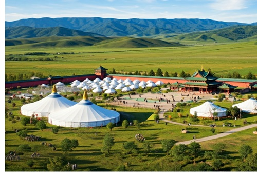
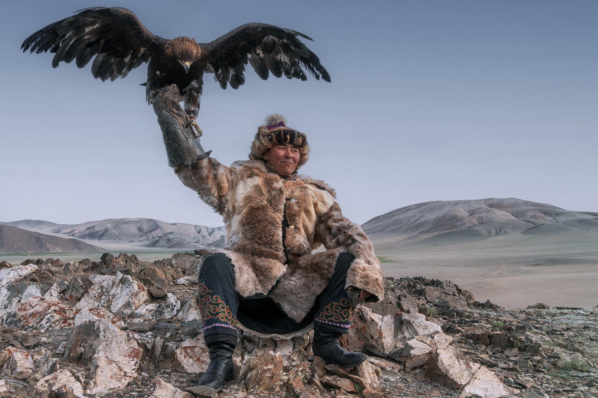

Mongolian Cultural Center

Our Center
It will be located 1.5 hrs drive away from Ulaanbaatar.

Eagle Hunters
One of our unique shows. In the west side of Mongolia. people hunt with eagles.
Five reasons why you should visit us
- It is a land that you literally feel peace and freedom. Mongolia is known as its huge untouched land and unique nomadic lifestyle. It is the 18th largest and yet the least populated country in the world. We have millions of livestock roam free. You can camp almost everywhere as long as if its an open space. Also, you can experience nomadic lifestyle and assemble the yurt "ger" which they live.
- Discover the nature from the horseback. We have millions of horse and we respect them because they play an important role in our culture. There are several travel agents that offer horseback riding.
- A home country of Chinggis Khaan. We have a rich history and historical sites. Our center will be located near by the biggest "Chinggis Khaan" statue. Also, you can visit his birthplace. Every summer, we celebrate our biggest holiday called "Naadam". We has started to celebrate this festival since Chinggis Khaan organized and united Mongolia in 1206. It includes "Three Games of Men" which are "Tranditional Wrestling", "Archery", and "Horse Racing".
- Hunter with eagle. Mongolia is a country hosts the biggest eagle festival and we have hunters that hunt with their eagles which happens only once a year. However, if you visit us, you will be able to watch the mini version of it anytime.
- Witness the throat singing and other performances.
Meet the Team

Enkhchimeg Zorigt
A junior student majoring in Business Finance and Human Resources at the Brigham Young University of Hawaii. Passionate about learning new things.
Sumiya Munkhbaatar
A senior student majoring in Business Management with an emphasis in Finance at the Brigham Young University of Hawaii. She is ambituous and once she start something, she do it beyond expectations.